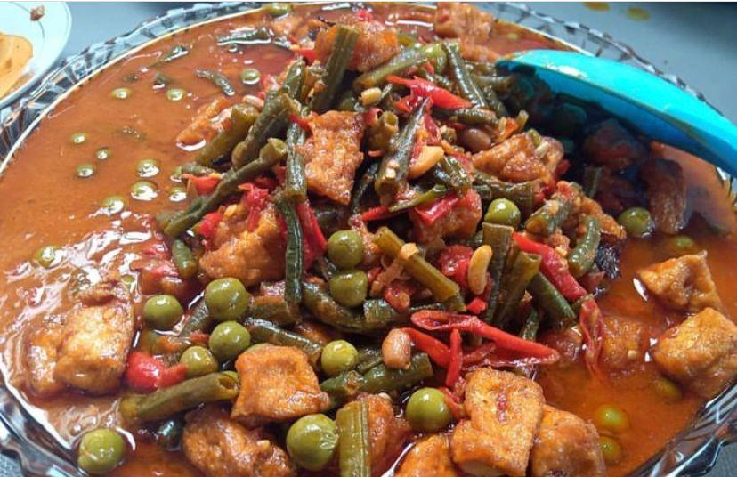

Daftar Makanan Khas

Tauco Pangandaran
Makanan khas berbahan dasar kecap tauco yang dimasak dengan daging sapi, memberikan rasa gurih manis dan sedikit asam yang unik.
Ikan Asin Jambal Roti
Olahan ikan asin khas Pangandaran yang terkenal karena rasa gurihnya yang kuat dan tekstur dagingnya yang tebal.

Pindang Gunung
Sup ikan laut dengan kuah pedas segar khas Pangandaran, dimasak menggunakan bumbu rempah alami dan cabai rawit.